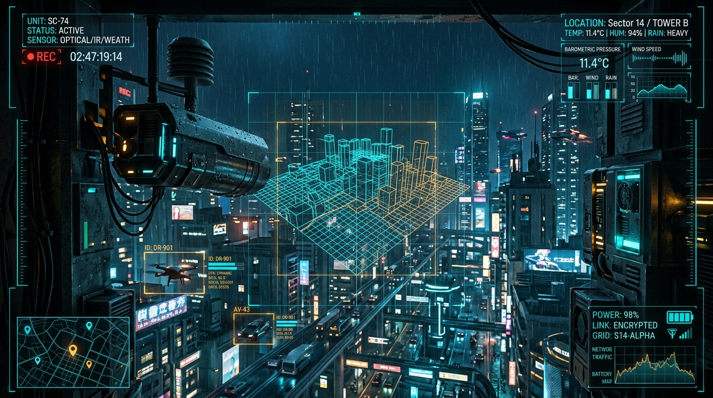

Tilt sensor triggered! Verify physical unit orientation.

Test your website and charts in real-time before connecting your physical ESP32. Adjust the sliders and transmit packets:
Connect your sensors to your ESP32 board following this tested pinout. Analog sensors are placed on ADC1 pins to avoid WiFi interference.
render.yaml
uvicorn main:app --host 0.0.0.0 --port $PORT
https://astra26-hub.onrender.com
SERVER_URL